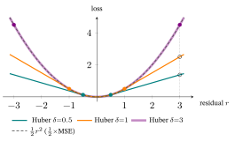
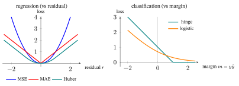
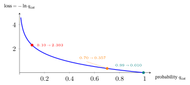
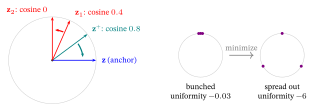
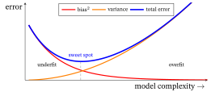
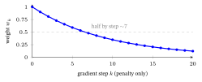
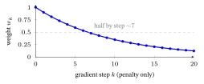
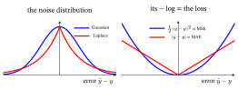
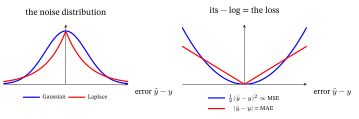
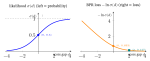

Loss Functions & Regularizers
Part A — The general ML/AI picture
1. What is a loss function? (and why “loss”?)
A machine-learning model is a function with tunable knobs (parameters, written \(\theta\)). Training means choosing \(\theta\). To choose, we need a single number that says “how bad is the current \(\theta\)?” — a number we then make as small as possible. That number is the loss.
A loss function \(\mathcal{L}(\theta)\) maps the current parameters to a single real number measuring how badly the model’s predictions disagree with the data. Training = minimizing it.
Why is it called loss?
The word comes from statistical decision theory (Abraham Wald, 1930s–40s). There, a loss function quantifies the penalty you incur for a wrong decision — exactly as in everyday English: a bad estimate makes you “lose” something (money, accuracy). ML borrowed the term wholesale: predict 4 stars when the truth is 1, and you have “lost” 3 stars’ worth of accuracy.
The pile of near-synonyms (and their shades of meaning)
You will see several words for almost-the-same thing. They differ only in emphasis:
| Word | Where it came from | Shade of meaning |
|---|---|---|
| Loss | decision theory (Wald) | penalty for one wrong prediction |
| Cost | optimization / control | often the total loss summed/averaged over the whole dataset |
| Error | numerical analysis | stresses “distance from the right answer” |
| Objective | optimization | the most neutral word — the function you optimize (could be min or max) |
| Risk | statistical learning theory (Vapnik) | the expected loss over the true data distribution |
| Criterion | software (PyTorch’s criterion=) |
just the chosen loss object in code |
Two of these deserve a real definition because they appear constantly:
- Empirical Risk. We cannot average the loss over the true distribution (we don’t have it), so we average over the training sample. That sample-average is the empirical risk, and minimizing it is Empirical Risk Minimization (ERM) — the formal name for “fit the training data.” Empirical = “from observed data”; risk = “expected loss.” Nearly all supervised training is ERM plus a regularizer (§4).
\[ \underbrace{\hat{R}(\theta)}_{\text{empirical risk}} \;=\; \frac{1}{N}\sum_{n=1}^{N} \ell\big(\hat{y}_n(\theta),\, y_n\big), \]
where \(\ell\) is the per-example loss (lowercase \(\ell\)), \(\hat{y}_n\) the prediction, \(y_n\) the truth. The capital \(\mathcal{L}\) or \(\hat{R}\) is the average over all \(N\) examples.
2. The taxonomy of losses (and the name of each)
Which loss you pick is decided by what kind of thing you are predicting. Two big families, then a modern third.
2.1 Regression losses — predicting a number
Used when the target \(y\) is continuous (a temperature, a price, a 1–5 rating). Write the residual \(r=\hat y-y\) (prediction minus truth); as a running example, suppose you predict \(\hat y=4.5\) for a true rating \(y=4\), so \(r=0.5\).
Mean Squared Error (MSE) / “squared loss” / “L2 loss”.
\[ \ell_{\text{MSE}} = (\hat{y}-y)^2, \qquad \mathcal{L}_{\text{MSE}} = \frac{1}{N}\sum_n (\hat{y}_n-y_n)^2. \]
- Per component: \(\hat y-y\) is the residual \(r\); squaring makes the penalty grow with the square of the miss and discards the sign; \(\tfrac1N\sum_n\) averages over the \(N\) examples. (Running example: \(r^2=0.5^2=0.25\).)
- Name: literally the mean of the squared errors.
- The squaring punishes a big miss far more than a small one (being off by 4 costs 16, not 4) — so MSE is sensitive to outliers.
- Why squared and not, say, to the 4th power? Because of a deep fact we prove in §6: squared error is what you get if you assume the noise in your data is Gaussian (bell-curve). This is the oldest loss in statistics — least squares (Legendre, 1805; Gauss’s probabilistic justification, 1809).
Mean Absolute Error (MAE) / “L1 loss”.
\[ \ell_{\text{MAE}} = |\hat{y}-y|. \]
- Name: mean of the absolute errors.
- Being off by 4 costs 4, not 16 → robust to outliers, but the kink at 0 makes it non-differentiable there (you use a subgradient). It corresponds to Laplace noise and targets the median rather than the mean (the value minimizing summed absolute deviation is the median; summed squared, the mean).
Huber loss — the compromise.
\[ \ell_\delta = \begin{cases} \tfrac12(\hat{y}-y)^2 & |\hat{y}-y|\le\delta \\[4pt] \delta\,|\hat{y}-y|-\tfrac12\delta^2 & \text{otherwise.}\end{cases} \]
- Name: after statistician Peter Huber (1964), who founded robust statistics.
- Per component: below the threshold \(|r|\le\delta\) it is the smooth quadratic \(\tfrac12 r^2\) (MSE-like); above it, the linear \(\delta|r|-\tfrac12\delta^2\) (MAE-like). The \(-\tfrac12\delta^2\) is exactly what makes the two pieces meet without a jump at \(|r|=\delta\) (both equal \(\tfrac12\delta^2\) there). The knob \(\delta\) sets the switch-over — quadratic/differentiable near \(0\), linear/outlier-robust far out. (Running example, \(\delta=1\): \(\tfrac12 r^2=0.125\).)
- How to pick \(\delta\): it is the residual size at which you stop trusting a point as “clean” and start treating it as an outlier, so set it on the scale of a typical residual. The robust-statistics default is \(\delta\approx1.35\,\hat\sigma\) (Huber’s \(1.345\), the value giving \(\approx95\%\) of least-squares’ efficiency when the noise really is Gaussian), where \(\hat\sigma\) is a robust spread estimate — typically \(\hat\sigma=\text{MAD}/0.6745\) (MAD \(=\) the median of \(|r-\text{median}(r)|\); dividing by \(0.6745=\Phi^{-1}(0.75)\) rescales the MAD to match a Gaussian standard deviation). Smaller \(\delta\Rightarrow\) more MAE-like (more robust, less smooth); larger \(\Rightarrow\) more MSE-like.

2.2 Classification losses — predicting a category
Used when \(y\) is a label (spam / not-spam; which of 10 digits).
Binary Cross-Entropy (BCE) / “log loss”.
\[ \ell_{\text{BCE}} = -\big[\, y\log\hat{p} + (1-y)\log(1-\hat{p})\,\big], \qquad y\in\{0,1\}, \]
where \(\hat{p}\in(0,1)\) is the model’s predicted probability of class 1 (usually from a sigmoid \(\sigma(z)=\tfrac{1}{1+e^{-z}}\) (Probability primer §3), which squashes any real number into \((0,1)\)).
- Per component (a switch, like the Bernoulli in Probability primer §2): the label \(y\in\{0,1\}\) selects which term lives — for a positive (\(y{=}1\)) only \(-\log\hat p\) survives, for a negative (\(y{=}0\)) only \(-\log(1-\hat p)\). Each is the surprise \((-\log)\) at the right answer. (Running example: \(y{=}1,\ \hat p{=}0.7 \Rightarrow -\log 0.7 = 0.357\).)
- Why “cross-entropy”? From information theory (Shannon). The entropy of a distribution is the average number of bits needed to encode samples from it. The cross-entropy \(H(p,q)\) is the bits needed if you encode samples from the true \(p\) using a code built for a different distribution \(q\). Minimizing it drives your predicted \(q\) toward the truth \(p\) — “cross” because it is between two distributions. (Full tour — surprise, entropy, KL, and why this is the classification loss — in §2.3.)
- Why “log loss”? It is the negative log-likelihood of a Bernoulli (coin-flip) model — see §6. The log means a confident wrong answer (\(\hat{p}\to0\) when \(y=1\)) is punished enormously (\(-\log 0 = +\infty\)).
Worked, end to end (both labels). A logit \(z=0.85\) gives \(\hat p=\sigma(0.85)=0.70\). If the truth is positive (\(y{=}1\)): \(\ell=-\log 0.70=0.357\). If the truth is negative (\(y{=}0\)) at the same confidence \(\hat p=0.70\): \(\ell=-\log(1-0.70)=-\log 0.30=1.204\) — over \(3\times\) larger, because the model placed \(0.70\) on the wrong class. BCE rewards confidence only when it is correct; confident-and-wrong is exactly what the \(-\log\) punishes.
Categorical Cross-Entropy — the \(K\)-class generalization, paired with softmax:
\[ \ell_{\text{CE}} = -\sum_{c=1}^{K} y_c \log \hat{p}_c, \qquad \hat{p}_c = \frac{e^{z_c}}{\sum_{k} e^{z_k}}\ \text{(softmax)}. \]
- Per component (the one-hot collapse, Probability primer §7): the label \(y_c\) is \(1\) for the true class and \(0\) elsewhere, so the sum keeps a single term, \(\ell_{\text{CE}}=-\log\hat p_{\text{true}}\) — the surprise at the correct class; the \(\hat p_c\) come from the softmax.
- Why “softmax”? It is a soft (smooth, differentiable) version of argmax. Instead of hard-picking the single largest score, it returns a probability distribution that leans toward the largest — a “soft maximum.” This name returns in recsys §10.
Hinge loss — the SVM loss.
\[ \ell_{\text{hinge}} = \max(0,\; 1 - y\cdot \hat{y}), \qquad y\in\{-1,+1\}. \]
- Per component: \(y\cdot\hat y\) is the margin (positive when the score \(\hat y\) has the same sign as the label \(y\in\{-1,+1\}\)); \(1-y\hat y\) is how far short of a safe margin of \(1\) you are; \(\max(0,\cdot)\) zeroes the loss once you clear it — so only not-yet-safe examples contribute.
- Why “hinge”? Plot it. It is flat at zero once you are correct-with-margin, then bends into a straight downward ramp — the graph looks exactly like a door hinge. The kink is the hinge point. The flat region is the key idea: once an example is comfortably correct, it contributes no loss and no gradient.

Focal loss — cross-entropy for severe class imbalance (Lin et al., 2017), and recommendation is its native case (a few positives among a sea of negatives). It down-weights the easy examples the model already gets right:
\[ \ell_{\text{focal}} = -(1-\hat p)^{\gamma}\,\log\hat p \qquad(\hat p = \text{the model's probability of the true class}). \]
The bare \(-\log\hat p\) here is exactly the cross-entropy of §2.2 written on the true class (the same \(\hat p\) that BCE assigns to the correct label — \(\hat p\) for a positive, \(1-\hat p\) for a negative); focal only multiplies it by the new factor.
The added factor \((1-\hat p)^{\gamma}\) is the whole idea: for an easy, already-confident example (\(\hat p\to1\)) it \(\to0\), muting that example so training focuses on the hard, still-wrong ones; \(\gamma=0\) recovers plain cross-entropy. (Why “focal”: it focuses the loss on the hard cases.)
2.3 Why cross-entropy is the classification loss — a short tour of entropy
§2.2 defined cross-entropy; here is why it is the natural loss for classification — a genuinely useful detour through information theory (Shannon, 1948). (The Probability primer §7 builds entropy, cross-entropy, and KL from zero; here we recap just what the loss needs.)
Surprise (information content). How surprised should you be to observe an outcome of probability \(p\)? Define its information (or “surprise”) as
\[ I = -\log p. \]
A certain event (\(p=1\)) carries \(-\log 1 = 0\) — no surprise, no information. A rare event carries a lot. With \(\log_2\) the unit is bits. Example: a fair coin’s heads has \(-\log_2 0.5 = 1\) bit; for a coin that lands heads 99% of the time, heads carries only \(-\log_2 0.99 \approx 0.014\) bits (you basically knew it), while the rare tails carries \(-\log_2 0.01 \approx 6.64\) bits (very informative).
Entropy = expected surprise. The entropy of a distribution \(p\) is the average information over its outcomes:
\[ H(p) = -\sum_x p(x)\log p(x) = \mathbb{E}_{x\sim p}\big[-\log p(x)\big]. \]
By Shannon’s source-coding theorem this is the irreducible average number of bits to encode samples from \(p\) (the optimal code gives outcome \(x\) a length \(-\log_2 p(x)\)).
- Fair coin: \(H = -(0.5\log_2 0.5 + 0.5\log_2 0.5) = 1\) bit — maximally unpredictable.
- 99/1 coin: \(H = -(0.99\log_2 0.99 + 0.01\log_2 0.01) \approx 0.081\) bits — nearly predictable, hence cheap to encode.
- Certain outcome: \(H = 0\). Entropy peaks at the uniform distribution and bottoms at a sure thing.
Cross-entropy = bits with the wrong codebook. Now suppose the data truly comes from \(p\), but you built your code assuming a different distribution \(q\) (your model’s prediction). Your average code length is the cross-entropy
\[ H(p,q) = -\sum_x p(x)\log q(x). \]
You pay \(-\log q(x)\) bits for an outcome that really occurs with frequency \(p(x)\); the better \(q\) matches \(p\), the cheaper your code.
KL divergence = the penalty for being wrong. The two are linked by one identity:
\[ H(p,q) = \underbrace{H(p)}_{\text{unavoidable}} + \underbrace{D_{\text{KL}}(p\,\|\,q)}_{\ge\,0,\ \text{extra bits because } q\ne p}. \]
Here \(D_{\text{KL}}(p\|q)\ge 0\), with equality iff \(q=p\) (Gibbs’ inequality; formally defined next, §2.4). Since the data fixes \(p\) — so \(H(p)\) is a constant you cannot change — minimizing cross-entropy over your model \(q\) is exactly minimizing \(D_{\text{KL}}(p\|q)\), i.e. making your predicted distribution match the truth. That one sentence is why cross-entropy is the loss.
Specializing to classification. In a \(K\)-class problem the true label is a one-hot distribution \(p\) — all mass on the correct class \(c^\star\) (e.g. \(p=[0,1,0]\) for “cat”). The sum then collapses:
\[ H(p,q) = -\sum_c p_c \log q_c = -\log q_{c^\star}. \]
So cross-entropy for one labelled example is just the negative log of the probability the model assigned to the correct class. And since \(H(p)=0\) for a one-hot \(p\), here cross-entropy \(=\) KL \(=\) the negative log-likelihood of §6 — three names, one number.
Worked numbers (true class = cat; natural log, so units are nats):
| model’s \(q_{\text{cat}}\) | loss \(-\ln q_{\text{cat}}\) | verdict |
|---|---|---|
| \(0.99\) | \(0.010\) | confident & right → almost no loss |
| \(0.70\) | \(0.357\) | right but unsure → small loss |
| \(0.10\) | \(2.303\) | confident & wrong → large loss |
The \(-\log\) shape is the whole point: confident-correct is nearly free, confident-wrong is punished brutally — which pressures the model toward calibrated probabilities.

Why not just use accuracy, or MSE?
- Accuracy has no usable gradient — it is flat, then jumps; you cannot descend on it. Cross-entropy is its smooth, differentiable surrogate.
- It is the MLE. Minimizing cross-entropy = maximizing the likelihood of the data under a Bernoulli/categorical model (§6) — the probabilistically correct objective, not an arbitrary one.
- Clean gradient with softmax. The gradient of softmax-cross-entropy w.r.t. the scores \(z\) is beautifully simple: \(\partial\ell/\partial z = q - p\) (“prediction minus truth”). MSE placed on top of a sigmoid/softmax instead saturates — its gradient vanishes exactly when the model is confidently wrong, so learning stalls. Cross-entropy does not.
Binary case ties back to the sigmoid. With \(K=2\) classes, softmax over scores \((z_0,z_1)\) gives \(q_1 = \tfrac{e^{z_1}}{e^{z_0}+e^{z_1}} = \sigma(z_1-z_0)\) — a sigmoid. Substituting into categorical cross-entropy recovers the BCE formula of §2.2 exactly. So BCE is cross-entropy with two classes, and the sigmoid is softmax with two classes.
One-line takeaway. Classification asks the model for a probability distribution \(q\) over classes; cross-entropy measures the extra coding cost of \(q\) versus the truth \(p\), equals the KL divergence (up to the constant \(H(p)\)), and equals the negative log-likelihood — so minimizing it simultaneously matches the truth, maximizes likelihood, and trains with a clean non-saturating gradient. That triple coincidence is why it is the default classification loss.
2.4 Distribution & contrastive losses (the modern additions)
KL divergence — distance-ish between two distributions (the extra bits of §2.3, now as a standalone object).
\[ D_{\text{KL}}(p\,\|\,q) = \sum_x p(x)\log\frac{p(x)}{q(x)}. \]
- Why “divergence” and not “distance”? Because it is not symmetric: \(D_{\text{KL}}(p\|q)\ne D_{\text{KL}}(q\|p)\), and it violates the triangle inequality. Kullback–Leibler, after the two authors (1951). Core to VAEs (§11) and knowledge distillation.
InfoNCE — the contrastive-learning workhorse.
\[ \ell_{\text{InfoNCE}} = -\log\frac{\exp(\text{sim}(z,z^+)/\tau)}{\sum_{k}\exp(\text{sim}(z,z_k)/\tau)}. \]
- Symbols: \(z\) is the anchor, \(z^+\) its positive (a matching view/item), the \(z_k\) are negatives, \(\text{sim}(\cdot,\cdot)\) is a similarity (usually cosine), and \(\tau>0\) is the temperature. The expression is exactly a softmax cross-entropy (softmax from Probability primer §3, cross-entropy from Probability primer §7) that pulls the anchor toward \(z^+\) and away from the crowd.
- Name, decoded: “NCE” = Noise-Contrastive Estimation (Gutmann & Hyvärinen,
- — learn by contrasting real data against noise. “Info” = it is a lower bound on the mutual information between the two views (the InfoNCE form is from van den Oord et al., 2018, CPC). So: contrast a positive \(z^+\) against a crowd of noise negatives \(z_k\), and you maximize information. The \(\tau\) is a temperature (small \(\tau\) = sharper, harder on near-misses). You will meet this name again as NT-Xent = Normalized Temperature-scaled Cross-Entropy (SimCLR’s name for the same thing). This is the bridge to SSL & Contrastive Learning.
Worked number. Take an anchor \(z\) with cosine similarity \(0.8\) to its positive \(z^+\) and \(0.4\) and \(0.0\) to two negatives, with temperature \(\tau=0.2\). Divide each similarity by \(\tau\) (giving \(4.0,\,2.0,\,0.0\)), exponentiate (\(e^{4}=54.6,\ e^{2}=7.39,\ e^{0}=1\)), and the positive’s softmax share — hence the loss — is
\[ \frac{54.6}{54.6+7.39+1}=\frac{54.6}{62.99}=0.867,\qquad \ell_{\text{InfoNCE}}=-\ln 0.867=\mathbf{0.143}. \]
The positive is the most similar, so it already owns most of the softmax mass and the loss is small. If its similarity collapsed to \(0.0\) (a tie with a negative), its share would fall to \(1/9.39=0.107\) and the loss would jump to \(-\ln 0.107=\mathbf{2.24}\) — the gradient then pulls \(z\) hard back toward \(z^+\) and away from the crowd. (Smaller \(\tau\) sharpens this: it magnifies the gap between the positive and the near-miss negatives.)
In practice. Never code these formulas literally — the raw \(\exp\) and \(\log\) overflow. Use the numerically stable forms your framework ships: for BPR and BCE, \(-\ln\sigma(x) = \mathrm{softplus}(-x)\) — call
F.logsigmoid(x)(PyTorch) or the equivalent rather thantorch.log(torch.sigmoid(x)). For softmax cross-entropy and InfoNCE, the denominator is computed via log-sum-exp with the max subtracted to keep exponents in range —F.cross_entropyandF.log_softmaxdo this for you. For BPR and all sampled losses, negatives are drawn uniformly at random by default — cheap, but it injects popularity bias (popular items appear more often as negatives and get over-penalized). The contrastive uniformity term (§11) is one way to counteract that bias structurally.
3. Worked example A — one gradient step (so “minimize” is concrete)
How does a loss actually train anything? Through gradient descent (the generic engine is Calculus §5): compute the slope (gradient) of the loss with respect to each parameter, then step the parameter downhill.
\[ \theta \;\leftarrow\; \theta \;-\; \eta \cdot \frac{\partial \mathcal{L}}{\partial \theta}, \]
where \(\eta\) (learning rate) is the step size. Let us do one step by hand.
Setup. The simplest model: \(\hat{y} = w\cdot x\) (one parameter \(w\), no bias). One training point \((x=2,\ y=6)\) — so the true \(w\) is obviously \(3\). We start at \(w=1\) and use squared-error loss with learning rate \(\eta=0.1\).
Step 1 — predict. \(\hat{y} = 1\times 2 = 2.\)
Step 2 — loss. \(\ell = (\hat{y}-y)^2 = (2-6)^2 = (-4)^2 = 16.\)
Step 3 — gradient. By the chain rule, \(\dfrac{\partial \ell}{\partial w} = 2(\hat{y}-y)\cdot x = 2\times(-4)\times 2 = -16.\)
Step 4 — update. \(w \leftarrow 1 - 0.1\times(-16) = 1 + 1.6 = \mathbf{2.6}.\)
Check it improved. New prediction \(\hat{y}=2.6\times2=5.2\); new loss \((5.2-6)^2 = 0.64\). The loss fell from 16 → 0.64 in one step, and \(w\) moved 1 → 2.6, heading toward the true \(3\). That is the entire engine of training, one turn of the crank.
This is all “minimize the loss” ever means: repeat steps 1–4 over the data until the loss stops falling. Everything else — fancier models, fancier losses — is detail bolted onto this loop. We reuse this exact machinery on BPR in §9.
4. What is a regularizer? (and why “regularization”?)
Minimizing the loss as hard as possible has a failure mode: the model can memorize the training data, including its noise, and then flop on new data. This is overfitting. A regularizer is a second term added to the objective that discourages overly complex / extreme solutions, trading a little training fit for better generalization.
\[ \boxed{\;\mathcal{L}_{\text{total}}(\theta) \;=\; \underbrace{\mathcal{L}_{\text{task}}(\theta)}_{\text{fit the data}} \;+\; \underbrace{\lambda \cdot \mathcal{R}(\theta)}_{\text{stay simple}}\;} \]
\(\mathcal{R}(\theta)\) penalizes complexity; \(\lambda\ge 0\) (the regularization strength) sets how much we care. \(\lambda=0\) → pure fitting (risk overfit); \(\lambda\) large → very simple model (risk underfit). It is one of the most important knobs you tune.
The bias–variance trade-off — why regularizers exist
The deep reason overfitting happens, and why a regularizer helps, is the bias–variance trade-off — the single most important idea about generalization (doing well on new data, not just the training set). Imagine retraining your model on many different training sets drawn from the same source; its prediction error on unseen data splits into three parts:
\[ \underbrace{\mathbb{E}\big[(\hat f - y)^2\big]}_{\text{expected test error}} \;=\; \underbrace{(\text{bias})^2}_{\text{wrong on average}} \;+\; \underbrace{\text{variance}}_{\text{jumpy across training sets}} \;+\; \underbrace{\text{noise}}_{\text{irreducible}}. \]
- Bias — how far the model is on average from the truth. High bias = the model is too simple to capture the pattern → underfitting (e.g. fitting a curve with a straight line).
- Variance — how much the fit jumps around when the training data changes. High variance = the model is too flexible and chases noise → overfitting (e.g. a wiggly high-degree polynomial through every point).
- Noise — irreducible randomness in the data; no model can beat it.

The dartboard picture. Bias = your darts cluster off-centre (consistently wrong). Variance = your darts are scattered (inconsistent). You want both small, but pushing one down often pushes the other up — hence a trade-off. As model complexity rises, bias falls but variance grows; test error is a U-shape, lowest at the sweet spot in between.

A regularizer slides you along that trade-off: it deliberately adds a little bias (forcing simpler / smaller-weight solutions) to buy a large drop in variance — landing nearer the U-curve’s bottom. That is the whole point of the \(\lambda\mathcal{R}\) term, and why \(\lambda\) too small overfits (high variance) while \(\lambda\) too large underfits (high bias).
Worked example — the trade in numbers. Suppose the true value is \(10\), and we look at a model’s predictions across three different training sets:
| Model | predictions | mean | bias\(^2\) | variance | total err = bias\(^2\)+var |
|---|---|---|---|---|---|
| A (flexible) | \(8,\;12,\;10\) | \(10\) | \(0\) | \(\tfrac{4+4+0}{3}=2.67\) | \(\mathbf{2.67}\) |
| B (rigid) | \(9,\;9,\;9\) | \(9\) | \(1\) | \(0\) | \(\mathbf{1.00}\) |
Model A is unbiased (mean \(=10\)) but high-variance (it swings \(8\)–\(12\)); model B is slightly biased (always \(9\)) but zero-variance. Here B’s total error (\(1.00\)) beats A’s (\(2.67\)) — a textbook case where accepting a little bias for much less variance wins. A regularizer is the knob that creates model B from model A.
Why is it called regularization?
This name is the least obvious and the most illuminating. It comes from the theory of ill-posed problems (Jacques Hadamard, early 1900s). A problem is well-posed if a solution exists, is unique, and depends stably on the data; otherwise it is ill-posed — tiny data wiggles cause wild solution swings. In the 1940s–60s, Andrey Tikhonov showed you could fix an ill-posed problem by adding a penalty term that forces the solution to be “regular” — i.e. well-behaved, smooth, not wild. The act of making the solution regular is regularization.
So a regularizer literally “regularizes” the solution: it tames an unstable, wild-swinging fit into a tame, well-behaved one. Tikhonov regularization is exactly the L2 penalty below — the original, and still the default.
5. The taxonomy of regularizers (and the name of each)
5.1 Norm penalties
A norm is a way to measure the “size” of a vector. Penalizing the norm of the parameters says “keep the knobs small unless the data really demands otherwise.”
L2 / Ridge / Tikhonov / “weight decay”.
\[ \mathcal{R}_{L2}(\theta) = \|\theta\|_2^2 = \sum_k \theta_k^2. \]
- Why “L2”? It is the squared \(\ell^2\) norm (Euclidean length). The “L” is conventionally associated with Lebesgue (the \(\ell^p\) / \(L^p\) function spaces). \(\ell^2\) = root-sum- of-squares; squaring it drops the root for a clean derivative \(2\theta_k\).
- Why “ridge”? From ridge regression (Hoerl & Kennard, 1970): adding \(\lambda\) to the diagonal of the \(X^\top X\) matrix is like laying a raised ridge along that diagonal — which is also what stabilizes the inversion.
- Why “weight decay”? Look at the gradient step. The penalty’s gradient is \(2\lambda\theta\), so the update becomes \(\theta\leftarrow\theta-\eta(\nabla \mathcal{L}_{\text{task}} + 2\lambda\theta) = (1-2\eta\lambda)\theta - \eta\nabla \mathcal{L}_{\text{task}}\). Each step multiplies \(\theta\) by a factor slightly below 1 — the weight literally decays toward zero unless the data keeps pushing it back. (We see this decay numerically in the box below.) (This equivalence holds for plain SGD; with Adam the L2 gradient is rescaled by the second-moment estimate, which is why AdamW (Loshchilov & Hutter, 2019) decouples the decay and applies it directly to the parameter.)
- Effect: shrinks all weights smoothly toward 0, never exactly to 0.
L2 in the §3 example. Re-do the gradient step with \(\mathcal{L}=(\hat y-y)^2+\lambda w^2\), \(\lambda=0.5\). The gradient gains a \(2\lambda w = 2(0.5)(1)=1\) term: total \(= -16+1 = -15\), so \(w\leftarrow 1-0.1(-15)=\mathbf{2.5}\) — less than the unregularized 2.6. The penalty pulled \(w\) back toward 0 by exactly 0.1. That nudge-toward-zero, every step, is weight decay.
Weight decay, watched over steps. Strip the data term for a moment (\(\nabla\mathcal{L}_{\text{task}}=0\)) so only the penalty acts: the update is \(w\leftarrow(1-2\eta\lambda)\,w\) — a constant shrink factor applied every step. With \(\eta=0.1,\ \lambda=0.5\) that factor is \(1-2(0.1)(0.5)=0.9\), so from \(w_0=1\) the weight decays geometrically, \(1\to0.9\to0.81\to0.729\to\dots\), about halving every \(7\) steps (\(0.9^{7}=0.48\)) and approaching \(0\) without ever reaching it. That is the literal meaning of decay: with nothing pushing back, every weight slides toward zero at rate \((1-2\eta\lambda)\) per step; in real training the data gradient fights it, and the weight settles where the two balance.

L1 / Lasso.
\[ \mathcal{R}_{L1}(\theta) = \|\theta\|_1 = \sum_k |\theta_k|. \]
- Why “L1”? The \(\ell^1\) norm — sum of absolute values (a.k.a. “Manhattan” / “taxicab” distance: you travel along the grid, not the diagonal).
- Why “lasso”? It is an acronym: Least Absolute Shrinkage and Selection Operator (Tibshirani, 1996). The two verbs are the behavior: shrinkage (pulls weights down) and selection (drives some to exactly zero, dropping those features). The geometry of the \(|\cdot|\) corner is what produces exact zeros — hence sparse models.

Elastic Net.
\[ \mathcal{R}(\theta) = \lambda_1\|\theta\|_1 + \lambda_2\|\theta\|_2^2. \]
- Why “elastic net”? Zou & Hastie (2005) pictured a stretchable fishing net that “retains all the big fish” — it keeps groups of correlated features together (an L2 trait) while still selecting (an L1 trait). Combines sparsity and stability.
5.2 Structural / procedural regularizers (no explicit penalty term)
Not every regularizer is a term you add to \(\mathcal{L}\). Some are procedures:
Dropout. - What: during training, randomly drop out (set to zero) a fraction \(p\) of the units in a layer each step; rescale the survivors. - Why the name: you literally remove (“drop out”) neurons at random. - Why it regularizes: the network can’t lean on any single unit (it might vanish next step), so it must spread the representation around — equivalent to training a huge ensemble of thinned sub-networks and averaging them. (Srivastava et al., 2014.) In recsys this reappears as edge dropout on the graph (§12, SSL & Contrastive Learning).
Early stopping. - What: watch a held-out validation metric and stop as soon as it stops improving, even if training loss could keep falling. - Why it regularizes: it caps how far the optimizer can wander from its (small, random) starting point — an implicit limit on complexity, with no penalty term at all. Often the cheapest, most effective regularizer in deep learning.
Batch / Layer Normalization. - What: re-center and re-scale activations across a batch (BN) or across a layer (LN). - Why it regularizes (as a side effect): the per-batch noise it injects, and the smoother loss surface it creates, both improve generalization. (Primary purpose is optimization stability; regularization is a bonus.)
Data augmentation. - What: train on randomly perturbed copies of inputs (flip/crop an image; drop graph edges). - Why it regularizes: it tells the model which changes should not matter, enlarging the effective dataset. This is the conceptual seed of contrastive SSL (SSL & Contrastive Learning).
6. The one picture that unifies — and names — both halves
Here is the payoff that ties §1–§5 together and explains where the specific formulas come from. It is the MAP (Maximum A Posteriori) view. (This is the Probability primer’s §6 applied to model parameters — see the Probability primer for Bayes’ rule, likelihood, prior/posterior, and the MLE-vs-MAP coin example built from zero.)
Bayes’ rule for parameters given data:
\[ \underbrace{p(\theta\mid \text{data})}_{\text{posterior}} \;\propto\; \underbrace{p(\text{data}\mid\theta)}_{\text{likelihood}}\;\cdot\;\underbrace{p(\theta)}_{\text{prior}}. \]
We want the most probable \(\theta\) (the “MAP estimate”). Maximizing a product is awkward, so take \(-\log\) — which turns products into sums (because \(\log\) of a product is a sum of \(\log\)s) and flips the max into a min (because \(-\log\) is monotone decreasing: a bigger input always gives a smaller output, so whatever \(\theta\) maximizes the posterior is the same \(\theta\) that minimizes its \(-\log\)):
\[ \theta^\star = \arg\min_\theta \Big[\; \underbrace{-\log p(\text{data}\mid\theta)}_{\textbf{= the loss}} \;\;+\;\; \underbrace{-\log p(\theta)}_{\textbf{= the regularizer}}\;\Big]. \]
Read that boxed correspondence slowly — it is the whole secret:
The loss is the negative log-likelihood (“how surprised is the model by the data”). The regularizer is the negative log-prior (“how surprised are we by the parameters, before seeing data”). Loss + regularizer = fit the data + respect a prior belief.
And every specific formula in §2 and §5 drops out of a specific choice of likelihood and prior:
| Assume this likelihood / prior | …and \(-\log\) gives this term | Name |
|---|---|---|
| Gaussian noise on \(y\) | \((\hat y - y)^2\) | MSE |
| Laplace noise on \(y\) | \(\lvert \hat y - y\rvert\) | MAE |
| Bernoulli (coin) outcome | \(-[y\log\hat p+(1{-}y)\log(1{-}\hat p)]\) | BCE / cross-entropy |
| Gaussian prior on \(\theta\) | \(\lambda\lVert\theta\rVert_2^2\) | L2 / ridge |
| Laplace prior on \(\theta\) | \(\lambda\lVert\theta\rVert_1\) | L1 / lasso |
So MSE is “I believe the noise is bell-shaped,” and L2 is “I believe the weights are small and bell-shaped around 0.” The names of half the field are just names of probability distributions seen through a \(-\log\). Keep this table in mind for §9: the “Bayesian” in Bayesian Personalized Ranking is exactly this posterior = likelihood × prior structure, and BPR’s L2 term is the “−log Gaussian prior” row above.

Choosing a loss'' andassuming a noise shape’’ are one act — and the same \(-\log\) turns a Gaussian prior on the weights into the L2 regularizer.
Part B — Loss & regularization in recommendation
7. Why recommendation needs its own losses
Two features of recommendation data break the clean Part-A picture and force specialized losses.
(1) Implicit, one-class feedback. Most real systems never see ratings — only clicks, plays, purchases. You observe positives only. A movie a user didn’t click is not a confirmed “dislike”; they may simply never have seen it. So the “negative” class is unlabeled, not negative — and we must invent negatives by negative sampling (randomly drawing un-interacted items and treating them as negative).
(2) The goal is ranking, not exact scores. We serve a top-\(K\) list. Whether the predicted score for the right item is \(0.9\) or \(4.7\) is irrelevant; what matters is that it lands above the items the user won’t want. This pushes us from pointwise losses (predict each score) toward pairwise and listwise losses (get the order right). The three stances:
| Stance | What it scores | Analogy |
|---|---|---|
| Pointwise | each \((u,i)\) alone: “score this pair” | grading each answer in isolation |
| Pairwise | a pair \((i,j)\): “is \(i\) ranked above \(j\)?” | “which of these two is better?” |
| Listwise | the whole ranked list at once | grading the entire ordering |
These three labels organize the entire recsys loss zoo below.
8. Traditional era — rating prediction (pointwise, explicit)
The classical setup (think the Netflix Prize, 2006–09): users give explicit star ratings, and the task is rating prediction — fill in the missing cells of the user × item rating matrix. Because the target is a real number, the loss is pure Part-A regression.
Matrix Factorization (MF) represents user \(u\) and item \(i\) as vectors \(p_u, q_i\) and predicts \(\hat r_{ui} = p_u^\top q_i\) (a dot product). It is trained with regularized MSE — only over the observed ratings \(\mathcal{K}\):
\[ \mathcal{L}_{\text{MF}} = \sum_{(u,i)\in\mathcal{K}} (r_{ui} - p_u^\top q_i)^2 \;+\; \lambda\big(\|p_u\|^2 + \|q_i\|^2\big). \]
This is textbook Part A: squared-error loss (§2.1) + L2 regularizer (§5.1). The L2 term is essential — without it, MF overfits the sparse observed entries badly. Note the shape \(\lambda(\|p_u\|^2+\|q_i\|^2)\): regularize the embeddings. Exactly this term survives all the way to LightGCN (From Graphs to LightGCN §15) and RLMRec.
Implicit feedback, still pointwise — weighted MSE (ALS / WRMF). When you have only clicks, an influential early fix (Hu, Koren & Volinsky, 2008) kept squared error but (a) treated every unobserved cell as a \(0\) target and (b) attached a confidence weight \(c_{ui}\) (high for observed, low for unobserved):
\[ \mathcal{L}_{\text{WRMF}} = \sum_{u,i} c_{ui}\,(y_{ui} - p_u^\top q_i)^2 + \lambda(\cdots). \]
- Name: WRMF = Weighted Regularized Matrix Factorization; often solved by ALS = Alternating Least Squares (fix users, solve items; fix items, solve users; repeat — each half is plain least squares). Still squared-error + L2 at heart.
The limitation that triggered the next era: forcing every un-clicked item to a hard \(0\) target is a lie (it’s “unknown,” not “disliked”), and predicting calibrated scores is wasted effort when we only need the order. Enter pairwise ranking.
9. The pairwise turn — BPR, worked by hand
Bayesian Personalized Ranking (Rendle et al., 2009) is the single most important loss in academic recommendation, and the default for LightGCN and most graph CF (From Graphs to LightGCN §14–15). It throws out absolute scores and optimizes order directly.
The idea. For a user \(u\), take an item \(i\) they interacted with (positive) and an item \(j\) they did not (sampled negative). We want the score of \(i\) above the score of \(j\). Define the gap \(d = \hat r_{ui} - \hat r_{uj}\) and pass it through the sigmoid \(\sigma\) to turn “is the gap positive?” into a probability. Model the event “user \(u\) prefers \(i\) over \(j\)” as a Bernoulli trial whose success probability is \(\sigma(d)\): the sigmoid squashes the score gap \(d\) into \([0,1]\), and \(\sigma(d)>0.5\) if and only if \(i\) scores above \(j\). Treating independently sampled triples as independent trials, the joint likelihood of observing all the stated preferences is the product \(\prod_{(u,i,j)}\sigma(d)\); taking \(-\log\) turns the product into a sum and flips maximization into minimization, giving the sum of \(-\ln\sigma(d)\) terms below — this is precisely where the “Bayesian” in the name comes from. The loss over all sampled triples \((u,i,j)\):
\[ \mathcal{L}_{\text{BPR}} = -\sum_{(u,i,j)} \ln \sigma\big(\underbrace{\hat r_{ui} - \hat r_{uj}}_{d}\big) \;+\; \lambda\,\|\Theta\|^2. \]
Why “Bayesian”? Why “Personalized”? Why this exact shape?
This is §6 made flesh — the name is a recipe:
- Bayesian / the \(\lambda\|\Theta\|^2\) tail. BPR is derived as a MAP estimate (§6): maximize the posterior = (product of \(\sigma(d)\) over triples, the likelihood) \(\times\) (a Gaussian prior on the parameters \(\Theta\)). Take \(-\log\): the likelihood becomes \(-\sum\ln\sigma(d)\) and the Gaussian prior becomes exactly the L2 term \(\lambda\|\Theta\|^2\). So BPR’s regularizer is not bolted on — it is the “−log prior” half of the very derivation that earns the word Bayesian.
- Personalized. The ranking \(i \succ_u j\) is per-user (\(\succ_u\)), not one global popularity order — each user gets her own ranking.
- Ranking. Only the difference \(d\) enters, so absolute score scale is free — pure order.
Worked example B — compute a BPR loss and its gradient by hand
Setup. One triple. Suppose the current model gives scores \(\hat r_{ui} = 2.0\) (positive) and \(\hat r_{uj} = 0.5\) (negative).
Step 1 — the gap. \(d = 2.0 - 0.5 = 1.5.\) (Positive → the model already ranks \(i\) above \(j\), good.)
Step 2 — sigmoid. \(\sigma(1.5) = \dfrac{1}{1+e^{-1.5}} = \dfrac{1}{1+0.2231} = \dfrac{1}{1.2231} = 0.8176.\)
Step 3 — loss for this triple. \(-\ln\sigma(1.5) = -\ln(0.8176) = \mathbf{0.2014}.\) Small but nonzero — even a correct ranking still nudges toward “more confident.”
Now the instructive contrast — a wrong triple. Swap the scores: \(\hat r_{ui}=0.5,\ \hat r_{uj}=2.0\), so \(d=-1.5\). \(\sigma(-1.5)=0.1824\), loss \(=-\ln(0.1824)=\mathbf{1.7014}\) — the loss is 8.4× larger. A mis-ranking hurts far more than a correct ranking, which is exactly what we want. (In Step 4 you’ll see the gradient ratio is a different number, 4.5× — losses scale with \(-\ln\sigma\), gradients with \(1-\sigma\), so the two ratios need not match.)
Step 4 — which way does it push? (the gradient). One line of chain rule gives the neat fact about this loss. Using \(\sigma'=\sigma(1-\sigma)\) (derived in Calculus §3) and \(\frac{d}{du}\ln u=\frac1u\):
\[ \frac{\partial\big(-\ln\sigma(d)\big)}{\partial d} = -\frac{\sigma'(d)}{\sigma(d)} = -\frac{\sigma(d)\big(1-\sigma(d)\big)}{\sigma(d)} = -\big(1-\sigma(d)\big). \]
| Triple | \(d\) | \(1-\sigma(d)\) | gradient wrt \(d\) | meaning |
|---|---|---|---|---|
| correct | \(+1.5\) | \(0.1824\) | \(-0.1824\) | gentle push: raise \(\hat r_{ui}\), lower \(\hat r_{uj}\) |
| wrong | \(-1.5\) | \(0.8176\) | \(-0.8176\) | 4.5× stronger gradient to fix the order |
Because the gradient is \(-(1-\sigma(d))\), the more wrong the triple (the more negative \(d\)), the bigger the corrective gradient. BPR automatically spends its effort on the pairs it currently gets wrong — and barely touches the ones it already nails. (Compare the §3 engine: same downhill step, applied to \(d\) instead of \(w\).)
BPR is a smooth surrogate for ranking accuracy. What we really want — the fraction of pairs ordered correctly (this is the AUC, Evaluation note) — is flat-then-jumps, with no usable gradient, exactly like classification accuracy in §2.3. \(-\ln\sigma(d)\) is its differentiable stand-in: same goal (drive \(d>0\)), but with a slope you can descend.

The figure below makes the full \(-\log\) likelihood chain visual: the left panel shows the likelihood \(\sigma(d)\) — the probability the model assigns to “user prefers \(i\) over \(j\)” — and the right panel shows the BPR loss \(-\ln\sigma(d)\), its negative log, which is what we minimize. Compare to Figure~\(\ref{fig:losses-noiselog}\) (§6): the structure is identical — a probability on the left, its \(-\log\) on the right — but now the \(x\)-axis is the pairwise score gap \(d\) rather than a pointwise error.

10. Pointwise & listwise losses for implicit feedback
BPR is pairwise. The other two stances each have a standard implicit-feedback loss.
Pointwise — Binary Cross-Entropy (used by NCF / NeuMF). Treat each observed pair as label \(1\) and each sampled un-observed pair as label \(0\), then do logistic regression on the score (§2.2):
\[ \mathcal{L}_{\text{BCE}} = -\!\!\sum_{(u,i)\in\mathcal{O}^+}\!\!\ln\sigma(\hat y_{ui}) \;-\!\!\sum_{(u,j)\in\mathcal{O}^-}\!\!\ln\big(1-\sigma(\hat y_{uj})\big). \]
Simple and popular in neural CF (NeuMF, 2017). Its weakness is the §7 one: it forces absolute \(0/1\) targets when we only care about order.
Listwise — (sampled) Softmax cross-entropy. Treat “which item did \(u\) pick” as a \(K\)-way classification over the catalog, using the softmax of §2.2:
\[ \mathcal{L}_{\text{SSM}} = -\sum_{(u,i)} \ln\frac{\exp(\hat y_{ui}/\tau)}{\sum_{j\in\mathcal S}\exp(\hat y_{uj}/\tau)}. \]
- Contrasts the positive against many negatives at once (more signal per step than BPR’s single negative), but the full denominator (every item) is expensive — so one uses sampled softmax or in-batch negatives over a subset \(\mathcal S\). A random subset is an unbiased estimate of the full-softmax gradient once you add the log-\(Q\) correction: subtract \(\log Q(j)\) from each sampled score, where \(Q(j)\) is the chance item \(j\) was drawn. (Without it, frequently-sampled popular items get over-penalized; the correction cancels that sampling bias.) The per-step cost then drops from the whole catalog to \(|\mathcal S|\). Worked: a popular negative drawn with \(Q=0.5\) and a rare one with \(Q=0.05\) (same raw score \(s=2\)) enter the corrected denominator as \(e^{2}/0.5\approx14.8\) and \(e^{2}/0.05\approx148\) — the rare item, standing in for the \(\sim20\) like it that were not sampled, is weighted \(\approx10\times\) more, which is what makes the sampled sum an unbiased estimate of the full softmax.
- Crucial connection: this is structurally the same formula as InfoNCE (§2.4). The listwise recommendation loss and the contrastive SSL loss of SSL & Contrastive Learning are the same object with a temperature \(\tau\) — which is why that chapter’s contrastive turn feels natural rather than alien.
Metric-aware listwise — the LambdaRank family. Sampled-softmax optimizes “pick the positive,” but the true target is a ranking metric like NDCG (Evaluation note), which — like accuracy (§2.3) — has no usable gradient. LambdaRank / LambdaMART (Burges, 2010) supply the missing gradient directly: weight each pair’s BPR-style update by how much swapping that pair would change NDCG, so the model pushes hardest on the swaps that move the metric most. The per-pair gradient is
\[ \Delta_{ij} = -|\Delta\text{NDCG}_{ij}|\cdot\bigl(1-\sigma(d_{ij})\bigr), \]
where \(d_{ij}=\hat{r}_{ui}-\hat{r}_{uj}\) is the score gap and \(|\Delta\text{NDCG}_{ij}|\) is the absolute change in NDCG from swapping items \(i\) and \(j\) in the ranking — so this is the magnitude of the BPR-style pairwise gradient, \(1-\sigma(d_{ij})\) (the \(-(1-\sigma(d))\) of §9), scaled by the NDCG impact of that swap. It is the listwise loss that most directly targets the number you actually report.
| Loss | Stance | Negatives needed | Optimizes | Typical user |
|---|---|---|---|---|
| Weighted MSE | pointwise (explicit/implicit) | all cells weighted | calibrated score | WRMF / ALS |
| BCE | pointwise | sampled | absolute \(0/1\) fit | NCF / NeuMF |
| BPR | pairwise | 1 per positive | relative order | LightGCN, most graph CF |
| Sampled softmax | listwise | many | order vs. a crowd | SSM, sequential models |
11. State-of-the-art — self-supervised, contrastive & LLM-aligned losses
Modern recsys (the subject of SSL & Contrastive Learning and The Spectral / Graph-Filter View) does not replace BPR; it adds auxiliary losses on top to fix sparsity and popularity bias. The total objective becomes a sum of a main ranking loss and one or more auxiliary terms.
Contrastive auxiliary loss — InfoNCE on two graph views (SGL, SimGCL, LightGCL). Make two perturbed “views” of the user–item graph (e.g. by edge dropout, §12), embed the same node twice, and pull its two views together while pushing different nodes apart — the InfoNCE of §2.4. The training objective is:
\[ \mathcal{L} = \underbrace{\mathcal{L}_{\text{BPR}}}_{\text{main ranking}} \;+\; \lambda_{\text{cl}}\,\underbrace{\mathcal{L}_{\text{InfoNCE}}}_{\text{self-supervised}} \;+\; \lambda\,\underbrace{\|\Theta\|^2}_{\text{L2}}. \]
Here is where “loss” and “regularizer” blur on purpose: the contrastive term is a loss by form, but it is added for its regularizing effect — it shapes the embedding geometry (spreads embeddings out, helping the long tail). Full treatment in SSL & Contrastive Learning.
Alignment + Uniformity (DirectAU, 2022) — a negative-free objective. Two geometric terms instead of sampled negatives:
\[ \mathcal{L} = \underbrace{\mathbb{E}\,\|z_u - z_i\|^2}_{\text{alignment: pull interacting pairs together}} \;+\; \gamma\underbrace{\log\,\mathbb{E}\,e^{-2\|z-z'\|^2}}_{\text{uniformity: spread everything on the sphere}}. \]
- Names (Wang & Isola, 2020): alignment = positives land close; uniformity = embeddings spread evenly over the unit hypersphere. The uniformity term is a direct counter to the popularity bias of From Graphs to LightGCN §13. Note this objective is all regularizer-flavored geometry — no explicit ranking loss at all.
- Decoding the uniformity term \(\log\,\mathbb{E}\,e^{-2\|z-z'\|^2}\): for two random embeddings \(z,z'\), the Gaussian kernel \(e^{-2\|z-z'\|^2}\) is \(\approx1\) when they sit on top of each other and \(\to0\) when far apart; the average \(\mathbb{E}\) over random pairs measures how clumped the cloud is, and the outer \(\log\) just tames the scale. Minimizing it forces random pairs apart — spreading embeddings over the sphere, which is uniformity.
Generative SSL — the VAE objective (Mult-VAE). A different SSL family: encode a user’s interaction history to a latent \(z\), decode it back, and train with the ELBO (Evidence Lower BOund — a tractable lower bound on the data’s log-likelihood, maximized in place of the true likelihood, which is intractable):
\[ \mathcal{L} = \underbrace{-\mathbb{E}_{q}\big[\ln p(r\mid z)\big]}_{\text{reconstruction loss}} \;+\; \beta\underbrace{D_{\text{KL}}\big(q(z\mid r)\,\|\,p(z)\big)}_{\text{KL regularizer}}. \]
This is a textbook §6 split: a reconstruction loss (negative log-likelihood of recovering the clicks — often multinomial NLL) plus a KL regularizer (§2.4) pulling the latent toward a standard-normal prior. The weight \(\beta\) is annealed (grown slowly from 0). Contrastive-vs-generative is SSL & Contrastive Learning’s central dichotomy.
LLM-aligned loss (RLMRec). The frontier this line of work builds on. An LLM produces a semantic profile of each user/item; an alignment loss ties those semantic vectors to the collaborative (LightGCN) embeddings — using either a contrastive (-Con) or generative (-Gen) form:
\[ \mathcal{L} = \mathcal{L}_{\text{BPR}} \;+\; \mathcal{L}_{\text{align}}(\text{LLM} \leftrightarrow \text{CF}) \;+\; \lambda\,\|\Theta\|^2. \]
The point made all the way back in From Graphs to LightGCN §17: LightGCN embeddings are featureless IDs, which is why there is room for an LLM’s semantic signal to be aligned in. SSL & Contrastive Learning §7 develops this in full.
12. Regularizers as actually used in recommendation
Collecting the recsys-specific regularizers (most are Part-A regularizers in disguise):
- L2 / weight decay on embeddings — the universal default, \(\lambda(\|p_u\|^2+\|q_i\|^2)\) in MF, \(\lambda\|E^{(0)}\|^2\) in LightGCN. LightGCN regularizes only the base embeddings \(E^{(0)}\) (its sole parameters) — the propagated layers have no parameters of their own. Tuning \(\lambda\) is one of the two or three highest-impact knobs.
- Embedding (L2) normalization — rescale each embedding to unit length before the dot product, turning it into cosine similarity. Removes raw-magnitude effects (a partial popularity-bias control) and stabilizes softmax/InfoNCE losses.
- Edge / message / node dropout — Part-A dropout (§5.2) applied to the graph: randomly delete edges during propagation. In NGCF it is plain regularization; in SGL it is literally the augmentation that creates the two contrastive views (SSL & Contrastive Learning). One mechanism, two readings.
- The contrastive / uniformity term itself — as noted in §11, an auxiliary SSL loss added for its regularizing effect on embedding geometry. The cleanest example of the loss/regularizer line dissolving.
- Early stopping on validation NDCG@\(K\) — halt when ranking quality stops improving; the same implicit regularizer as §5.2, just measured with a ranking metric.
Mental model (carry this into From Graphs to LightGCN, SSL & Contrastive Learning, and The Spectral / Graph-Filter View). Task loss = “rank the right items first.” Regularizer = “…but don’t overfit, don’t let magnitudes or popularity run away.” In practice you tune a small handful of knobs — the learning rate, the L2 weight \(\lambda\), and (if using SSL) the contrastive weight \(\lambda_{\text{cl}}\) and temperature \(\tau\) — and those dominate the results.
13. Decision guide
| Scenario | Primary loss | Regularizer |
|---|---|---|
| Explicit star ratings (Netflix-era) | (regularized) MSE | L2 on embeddings |
| Implicit feedback, pointwise | Weighted MSE (WRMF) or BCE (NCF) | L2 |
| Implicit feedback, ranking (the default) | BPR | L2 on embeddings |
| Graph-based CF (LightGCN family) | BPR | L2 + edge dropout |
| Self-supervised graph models (SGL/SimGCL/LightGCL) | BPR + InfoNCE | L2, edge dropout, the InfoNCE term itself |
| Negative-free geometric | Alignment + Uniformity | (the uniformity term is the regularizer) |
| Generative / VAE (Mult-VAE) | Reconstruction (NLL) | KL (β-annealed) |
| LLM-augmented (RLMRec) | BPR + alignment(LLM↔︎CF) | L2 |
| Sequential (SASRec/BERT4Rec) | next-item cross-entropy | dropout, layer-norm |
What goes wrong with each loss — and the fix. The table above says what to pick; this one says how each choice bites back in practice, and the standard remedy (every failure mode here is one already met above):
| Loss | Failure mode | Fix |
|---|---|---|
| MSE / WRMF | put on top of a sigmoid it saturates — gradient vanishes exactly when confidently wrong (§2.3); forcing un-clicked items to a hard \(0\) is a lie (§7) | use cross-entropy/BPR for the order; keep MSE only for genuinely numeric targets |
| BCE (pointwise) | trains an absolute \(0/1\) score we never need, and the rare positives drown in negatives | switch to BPR for ranking, or focal (\(\gamma{>}0\)) under heavy imbalance |
| Huber | \(\delta\) mis-scaled: too large \(\to\) pure MSE (outlier-sensitive), too small \(\to\) pure MAE (under-fits the bulk) | set \(\delta\approx1.35\,\hat\sigma\) (§2.1); re-estimate \(\hat\sigma\) if the residual scale drifts |
| BPR | uniform negatives inject popularity bias (popular items over-sampled as negatives, §2.4); one negative/step is low-signal | sample harder/more negatives, or move to sampled-softmax for more negatives per step |
| Sampled softmax | popular items appear in the sampled set too often and get over-penalized | subtract the log-\(Q\) correction (§10) to debias the sampled gradient |
| InfoNCE / NT-Xent | \(\tau\) too small \(\to\) unstable, gradient explodes on near-misses; \(\tau\) too large \(\to\) no contrast; embeddings can collapse to a point | tune \(\tau\) (a typical start is \(\approx0.1\)–\(0.2\)); the uniformity pressure (§11) guards against collapse |
| Alignment + Uniformity | the two terms fight: \(\gamma\) too high spreads everything (alignment lost), too low lets it collapse | tune the balance weight \(\gamma\); watch alignment and uniformity move together |
| VAE / ELBO | a too-strong KL causes posterior collapse — the latent is ignored, reconstruction degenerates | anneal \(\beta\) from \(0\) (§11) so reconstruction establishes first |
Bottom line. The whole field is two moves: pick a loss that matches your target (number → MSE; label → cross-entropy; order → BPR / softmax) and add a regularizer that keeps the fit honest (almost always L2 on the embeddings, plus dropout / SSL terms as you climb toward the state of the art). BPR + L2 is the canonical recsys starting point; everything in From Graphs to LightGCN, SSL & Contrastive Learning, and The Spectral / Graph-Filter View is built on top of it.
14. Exercises
Work these by hand — the numbers are kept tiny on purpose, and several reuse the chapter’s own worked examples (§2.1, §2.4, §3, §9, §10). Full worked solutions are in the Solutions appendix at the back of the book.
(compute) A model leaves three residuals \(r=\hat y-y\) of \(\{0.5,\,-2,\,1\}\). Compute the MAE \(\tfrac1N\sum|r|\), the MSE \(\tfrac1N\sum r^2\), and the mean Huber loss with \(\delta=1\) (§2.1). Which point alone makes MSE so much larger than MAE, and is that point treated by Huber as quadratic or linear?
(compute) The model predicts probability \(\hat p=0.7\) for a positive example (\(y=1\)). Compute the BCE \(-[\,y\ln\hat p+(1-y)\ln(1-\hat p)\,]\) (§2.2). Then recompute it for the same \(\hat p=0.7\) but a negative example (\(y=0\)). Which of the two costs more, and why does that match “\(-\log\) of the surprise at the right answer”?
(compute) Redo the chapter’s §3 gradient step from scratch — model \(\hat y=w x\), point \((x{=}2,\,y{=}6)\), start \(w=1\), learning rate \(\eta=0.1\), squared-error loss — to confirm \(w\to 2.6\). Then add an L2 term \(\lambda w^2\) with \(\lambda=0.5\) (§5.1), recompute the gradient and the update, and state how far the new \(w\) lands from the unregularized \(2.6\) (this is “weight decay” in one step).
(compute) Take the chapter’s §9 BPR triple: positive score \(\hat r_{ui}=2.0\), negative \(\hat r_{uj}=0.5\). Compute the gap \(d\), then \(\sigma(d)\), the per-triple loss \(-\ln\sigma(d)\), and the gradient \(-(1-\sigma(d))\) (§9). Now swap the two scores (a wrong triple) and recompute all four. By what factor does the loss grow, and by what factor does the gradient grow — and why need the two factors not be equal?
(compute) Reuse §2.4’s setup: an anchor with cosine similarity \(0.8\) to its positive and \(0.4,\,0.0\) to two negatives, temperature \(\tau=0.2\). Compute the InfoNCE loss \(-\ln\dfrac{e^{\,0.8/\tau}}{e^{\,0.8/\tau}+e^{\,0.4/\tau}+e^{\,0.0/\tau}}\) (§2.4). Then redo it with the positive’s similarity collapsed to \(0.0\), and say in one line why the loss jumps.
(concept) Both L1 (lasso) and L2 (ridge) shrink weights, but only one drives some weights to exactly zero (§5.1). Which one, and — using the diamond-vs-circle geometry of the chapter’s figure — explain why the shape of the \(|\cdot|\) penalty produces exact zeros (sparsity) while the smooth \(\|\cdot\|_2^2\) penalty only shrinks toward zero.
(concept) §6 shows every standard loss and regularizer is the \(-\log\) of a probability. State which noise distribution on \(y\) gives the MSE loss, and which prior on \(\theta\) gives the L2 regularizer, and explain in one or two sentences why “\(-\log\) of a product” turns the MAP objective (posterior \(\propto\) likelihood \(\times\) prior) into the sum “loss \(+\) regularizer.”
(concept) §2.4’s “in practice” box warns never to code \(-\ln\sigma(x)\) as
log(sigmoid(x)), nor a softmax denominator as a raw \(\sum e^{z_k}\). Name the numerically stable form used for each — the softplus identity \(-\ln\sigma(x)=\operatorname{softplus}(-x)=\ln(1+e^{-x})\) for the first, and log-sum-exp with the max subtracted for the second — and explain in words what goes wrong (overflow/underflow) if you do not use them.(extend) §10’s sampled softmax needs the log-\(Q\) correction to stay unbiased. Two negatives share the same raw score \(s=2\): a popular one drawn with probability \(Q=0.5\) and a rare one with \(Q=0.05\). Compute each item’s corrected contribution to the softmax denominator, \(e^{s}/Q\) (equivalently \(e^{\,s-\ln Q}\)), and state the ratio by which the rare item is up-weighted. Why is exactly this re-weighting what makes the sampled sum an unbiased stand-in for the full softmax?
(apply) A matrix-factorization recommender (§8) stores user \(\mathbf{p}=[2,1]\) and item \(\mathbf{q}=[1,2]\), scores by the dot product \(\hat r=\mathbf{p}^{\top}\mathbf{q}\), and trains with regularized MSE \(\mathcal{L}=(r-\hat r)^2+\lambda(\|\mathbf{p}\|^2+\|\mathbf{q}\|^2)\). For an observed rating \(r=5\) and \(\lambda=0.1\), compute \(\hat r\), the squared-error term, the L2 term, and the total objective. Then answer in one line: if this were implicit feedback (clicks, no ratings) and you only cared about the top-\(K\) order, which loss from §9–§10 would you switch to, and what single regularizer would you keep?
(compute) — BCE rewards correct confidence. A classifier outputs logit \(z\); recall \(\hat p=\sigma(z)\) and \(\ell_{\text{BCE}}=-[y\log\hat p+(1-y)\log(1-\hat p)]\). (a) At \(z=0\) (\(\hat p=0.5\)), compute the loss for \(y=1\) and for \(y=0\). (b) At \(z=2\) (\(\hat p=0.88\)), compute it for \(y=1\) and for \(y=0\). (c) Which of the four cases is least surprised, and which most?
(compute) — weight decay, step by step. L2 with learning rate \(\eta=0.05\), \(\lambda=1\), and no data gradient. (a) What is the per-step shrink factor \((1-2\eta\lambda)\)? (b) Starting from \(w=2\), list \(w\) after \(1\), \(2\), and \(3\) steps. (c) Will \(w\) ever reach exactly \(0\)?
(concept) — L1 vs L2: shrink, or select? Both penalize weight size (§5.1). (a) Which drives some weights to exactly zero, and what geometric feature of its penalty causes it? (b) You have \(10{,}000\) candidate features and want a model that uses only a handful — which penalty? (c) What name does §5.1 give to the L2 shrink-toward-zero that happens each gradient step?
15. Glossary
| Term | Plain meaning |
|---|---|
| Loss function | A single number measuring how wrong the model is; training minimizes it. |
| Cost / objective / criterion | Near-synonyms for loss (cost = total; objective = neutral; criterion = the code object). |
| Risk / empirical risk | Expected loss over the true distribution / its average on the training sample. |
| ERM | Empirical Risk Minimization — “fit the training data” (usually + a regularizer). |
| Gradient descent | Update \(\theta \leftarrow \theta - \eta\,\partial\mathcal L/\partial\theta\); step the knobs downhill. |
| Learning rate \(\eta\) | The step size in gradient descent. |
| MSE / squared loss | Mean of squared errors; from Gaussian noise; outlier-sensitive. |
| MAE / absolute loss | Mean of absolute errors; from Laplace noise; outlier-robust; targets the median. |
| Huber loss | Quadratic near 0, linear far out; robust compromise (after P. Huber). |
| Cross-entropy / BCE / log loss | Classification loss; bits to encode truth \(p\) with code for prediction \(q\); = −log-likelihood of Bernoulli. |
| Softmax | Smooth (“soft”) version of argmax; turns scores into a probability distribution. |
| Hinge loss | SVM loss; flat once correct-with-margin, then a linear ramp — shaped like a hinge. |
| Focal loss | Cross-entropy times \((1-\hat p)^\gamma\) to down-weight easy examples; for class imbalance. |
| KL divergence | Asymmetric “distance” between distributions (Kullback–Leibler); a divergence, not a metric. |
| InfoNCE / NT-Xent | Contrastive loss; Info = mutual-info bound, NCE = Noise-Contrastive Estimation; temperature \(\tau\). |
| Regularizer | A term/procedure that discourages complex solutions to improve generalization. |
| Regularization | Making an ill-posed solution “regular” (well-behaved); from Hadamard/Tikhonov. |
| Overfitting | Memorizing training noise; great on train, poor on new data. |
| \(\lambda\) (reg. strength) | How much we weight the regularizer vs. the loss. |
| L2 / ridge / Tikhonov / weight decay | \(\sum\theta_k^2\) penalty; shrinks weights smoothly toward 0; = Gaussian prior. |
| L1 / lasso | \(\sum|\theta_k|\) penalty; shrinks and selects (exact zeros → sparse); = Laplace prior. |
| Elastic net | L1 + L2 combined; “stretchable net” keeping correlated features. |
| Dropout | Randomly zero units during training; an ensemble-like regularizer; “edge dropout” on graphs. |
| Early stopping | Stop when validation stops improving; implicit regularizer. |
| MAP estimate | Maximize posterior ∝ likelihood × prior; ⟹ minimize (−log-lik) + (−log-prior) = loss + regularizer. |
| Likelihood / prior / posterior | \(p(\text{data}\mid\theta)\) / \(p(\theta)\) / \(p(\theta\mid\text{data})\). |
| Explicit vs. implicit feedback | Star ratings vs. clicks/plays (positive-only, unlabeled negatives). |
| Negative sampling | Drawing un-interacted items to act as negatives. |
| Pointwise / pairwise / listwise | Score each pair / a pair’s order / the whole list. |
| Matrix Factorization (MF) | \(\hat r_{ui}=p_u^\top q_i\); trained with regularized MSE. |
| WRMF / ALS | Weighted Regularized MF / Alternating Least Squares (implicit-feedback, squared error). |
| BPR | Bayesian Personalized Ranking — pairwise ranking loss; “Bayesian” = its MAP derivation; default for LightGCN. |
| Sampled softmax (SSM) | Listwise cross-entropy over a positive + many sampled negatives; structurally = InfoNCE. |
| LambdaRank / LambdaMART | Listwise loss whose gradient is weighted by each pair’s effect on NDCG. |
| Alignment & uniformity | Pull positives together / spread embeddings on the sphere (DirectAU); fights popularity bias. |
| ELBO | Evidence Lower BOund; the VAE (variational autoencoder) objective = reconstruction loss + β·KL. |
| Alignment loss (RLMRec) | Ties LLM semantic vectors to CF embeddings (contrastive -Con or generative -Gen). |
16. References
- Burges, C. J. C. (2010). From RankNet to LambdaRank to LambdaMART: An overview. Technical report MSR-TR-2010-82, Microsoft Research. https://www.microsoft.com/en-us/research/wp-content/uploads/2016/02/MSR-TR-2010-82.pdf
- Fortmann-Roe, S. (2012). Understanding the bias–variance tradeoff. Online essay. http://scott.fortmann-roe.com/docs/BiasVariance.html
- Gauss, C. F. (1809). Theoria motus corporum coelestium in sectionibus conicis solem ambientium. Perthes & Besser. [First published derivation of the method of least squares.]
- Goodfellow, I., Bengio, Y., & Courville, A. (2016). Deep learning. MIT Press. https://www.deeplearningbook.org/
- Gutmann, M., & Hyvärinen, A. (2010). Noise-contrastive estimation: A new estimation principle for unnormalized statistical models. In Proceedings of the 13th International Conference on Artificial Intelligence and Statistics (AISTATS), JMLR W&CP vol. 9, pp. 297–304. https://proceedings.mlr.press/v9/gutmann10a.html
- He, X., Deng, K., Wang, X., Li, Y., Zhang, Y., & Wang, M. (2020). LightGCN: Simplifying and powering graph convolution network for recommendation. In Proceedings of the 43rd International ACM SIGIR Conference on Research and Development in Information Retrieval, pp. 639–648. arXiv:2002.02126
- He, X., Liao, L., Zhang, H., Nie, L., Hu, X., & Chua, T.-S. (2017). Neural collaborative filtering. In Proceedings of the 26th International Conference on World Wide Web (WWW), pp. 173–182. arXiv:1708.05031
- Hoerl, A. E., & Kennard, R. W. (1970). Ridge regression: Biased estimation for nonorthogonal problems. Technometrics, 12(1), 55–67. https://doi.org/10.1080/00401706.1970.10488634
- Hu, Y., Koren, Y., & Volinsky, C. (2008). Collaborative filtering for implicit feedback datasets. In Proceedings of the 2008 IEEE International Conference on Data Mining (ICDM), pp. 263–272.
- Koren, Y., Bell, R., & Volinsky, C. (2009). Matrix factorization techniques for recommender systems. Computer, 42(8), 30–37. https://doi.org/10.1109/MC.2009.263
- Liang, D., Krishnan, R. G., Hoffman, M. D., & Jebara, T. (2018). Variational autoencoders for collaborative filtering. In Proceedings of the 2018 World Wide Web Conference (WWW), pp. 689–698. arXiv:1802.05814
- Lin, T.-Y., Goyal, P., Girshick, R., He, K., & Dollár, P. (2017). Focal loss for dense object detection. In Proceedings of the IEEE International Conference on Computer Vision (ICCV), pp. 2999–3007. arXiv:1708.02002
- Loshchilov, I., & Hutter, F. (2019). Decoupled weight decay regularization. In Proceedings of the 7th International Conference on Learning Representations (ICLR). https://openreview.net/forum?id=Bkg6RiCqY7
- MLU-Explain (2022). Bias and variance. Amazon. Interactive explainer. https://mlu-explain.github.io/bias-variance/
- Ng, A., & Ma, T. (2023). CS229 machine learning lecture notes. Stanford University. https://cs229.stanford.edu/main_notes.pdf
- Rendle, S., Freudenthaler, C., Gantner, Z., & Schmidt-Thieme, L. (2009). BPR: Bayesian personalized ranking from implicit feedback. In Proceedings of the 25th Conference on Uncertainty in Artificial Intelligence (UAI), pp. 452–461. arXiv:1205.2618
- Ren, X., Wei, W., Xia, L., Su, L., Cheng, S., Wang, J., et al. (2024). Representation learning with large language models for recommendation. In Proceedings of the ACM Web Conference 2024 (WWW), pp. 3464–3475. arXiv:2310.15950
- Scikit-learn (2024). Underfitting vs. overfitting. Online documentation. https://scikit-learn.org/stable/auto_examples/model_selection/plot_underfitting_overfitting.html
- Srivastava, N., Hinton, G. E., Krizhevsky, A., Sutskever, I., & Salakhutdinov, R. (2014). Dropout: A simple way to prevent neural networks from overfitting. Journal of Machine Learning Research, 15, 1929–1958. https://jmlr.org/papers/v15/srivastava14a.html
- Tibshirani, R. (1996). Regression shrinkage and selection via the lasso. Journal of the Royal Statistical Society: Series B (Methodological), 58(1), 267–288. https://doi.org/10.1111/j.2517-6161.1996.tb02080.x
- Tikhonov, A. N. (1963). Solution of incorrectly formulated problems and the regularization method. Soviet Mathematics Doklady, 4, 1035–1038.
- van den Oord, A., Li, Y., & Vinyals, O. (2018). Representation learning with contrastive predictive coding. arXiv preprint arXiv:1807.03748.
- Wang, C., Yu, Y., Ma, W., Zhang, M., Chen, C., Liu, Y., & Ma, S. (2022). Towards representation alignment and uniformity in collaborative filtering (DirectAU). In Proceedings of the 28th ACM SIGKDD Conference on Knowledge Discovery and Data Mining, pp. 1816–1825. arXiv:2206.12811
- Wang, T., & Isola, P. (2020). Understanding contrastive representation learning through alignment and uniformity on the hypersphere. In Proceedings of the 37th International Conference on Machine Learning (ICML), PMLR 119, pp. 9929–9939. https://proceedings.mlr.press/v119/wang20k.html
- Wu, J., Wang, X., Feng, F., He, X., Chen, L., Lian, J., & Xie, X. (2021). Self-supervised graph learning for recommendation (SGL). In Proceedings of the 44th International ACM SIGIR Conference on Research and Development in Information Retrieval, pp. 726–735. arXiv:2010.10783
- Zou, H., & Hastie, T. (2005). Regularization and variable selection via the elastic net. Journal of the Royal Statistical Society: Series B (Statistical Methodology), 67(2), 301–320. https://doi.org/10.1111/j.1467-9868.2005.00503.x
Online sources verified June 2026.
This chapter’s framework in one breath: training minimizes a loss (−log how-surprised-the-model-is-by-the-data) plus a regularizer (−log how-surprised-we-are- by-the-parameters). Pick the loss to match your target — a number (MSE), a label (cross-entropy), or an order (BPR / softmax) — and add a regularizer (almost always L2 on the embeddings) to keep it honest. Everything in From Graphs to LightGCN, SSL & Contrastive Learning, and The Spectral / Graph-Filter View is a specific, beautiful instance of that one sentence.